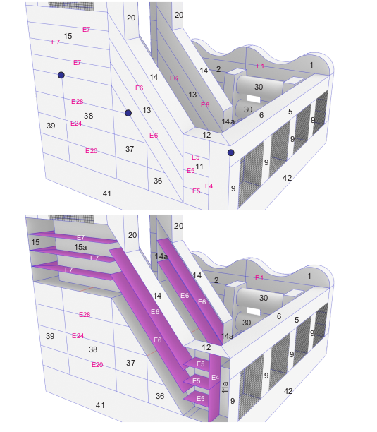

<ion-header>
  <ion-toolbar>
    <ion-buttons slot="start">
      <ion-button color="danger" (click)="cancel()">Cancel</ion-button>
    </ion-buttons>
    <ion-title>Registrar trabajos</ion-title>

  </ion-toolbar>
</ion-header>
<ion-content class="ion-padding">
  <ion-list>
      
    

    <ion-item>

      <form [formGroup]="worksFormGroup">
      <mat-stepper   linear  headerPosition="bottom" #stepper  [orientation]="(stepperOrientation | async)!">
        <mat-step  [stepControl]="worksFormGroup.get(['dising'])" errorMessage="Name is required.">
            <ng-template matStepLabel>seleccione disenio</ng-template>
          
            <ion-select  formControlName="dising" placeholder="seleccione diseño">
              <ion-select-option value="A-001"> jungla 
              </ion-select-option>
              <ion-select-option value="oranges">Oranges</ion-select-option>
              <ion-select-option value="bananas">Bananas</ion-select-option>
         
            </ion-select> 

          
      
              <ion-thumbnail *ngIf="worksFormGroup.get(['dising']).value =='A-001'" slot="end">
                
              </ion-thumbnail>
            
          
          
              <button style="margin-top:5% ;" mat-button matStepperNext (click)="selectDising()">Next</button>
          
              
          
          
        </mat-step>
        
        <mat-step [stepControl]="worksFormGroup.get('picesAndColors')" >

          <app-sliders style="margin-top: 5%;"></app-sliders>
         
            <ng-template  matStepLabel >Escoja colores</ng-template>
            <ion-item>
              
           
              <ion-title>Escoja colores</ion-title>
            
            </ion-item>
            <mat-form-field>
              <mat-label>Filter</mat-label>
              <input matInput (keyup)="applyFilter($event)" placeholder="Ex. Mia" #input>
            </mat-form-field>
            
            <div class="mat-elevation-z8 " >
              <table mat-table [dataSource]="dataSource" matSort>
            
                <!-- ID Column -->
                <ng-container matColumnDef="nombrePieza">
                  <th mat-header-cell *matHeaderCellDef mat-sort-header> # </th>
                  <td mat-cell *matCellDef="let row"> {{row.nombrePieza}} </td>
                </ng-container>
            
                <!-- Progress Column -->
                <ng-container matColumnDef="cantidad">
                  <th mat-header-cell *matHeaderCellDef mat-sort-header> cantidad </th>
                  <td mat-cell *matCellDef="let row"> {{row.cantidad}} </td>
                </ng-container>
            
            
                <ng-container matColumnDef="color">
                  <th mat-header-cell *matHeaderCellDef mat-sort-header> color </th>
                  <td mat-cell *matCellDef="let row">
                    <ng-container  *ngIf="filtroColores$ | async as filtroColores ">

                      <div class="select">
                        <mat-form-field style="width: 60%;" appearance="fill">
                          <mat-label>{{'seleccione color'}}</mat-label>
                          <mat-select   >
                            <mat-option  (click)="updateColor($event ,row)"  *ngFor="let color of filtroColores"   [value]="color.nombre_color"    >
                              {{color.nombre_color}}
                            </mat-option>
                          </mat-select>
                        </mat-form-field>
                      </div>
                    </ng-container>
                  </td>
                </ng-container>
               

                
            
                <tr mat-header-row *matHeaderRowDef="displayedColumns"></tr>
                <tr mat-row *matRowDef="let row; columns: displayedColumns;"></tr>
            
                <!-- Row shown when there is no matching data. -->
                <tr    class="mat-row " *matNoDataRow>
                  <td class="mat-cell" colspan="4">No data matching the filter "{{input.value}}"</td>
                </tr>
              </table>
            
              <mat-paginator [length]="sizeDatos"
              [pageSize]="pageSize" [pageSizeOptions]="[5, 10, 25, 100]" ></mat-paginator>
            </div>
            
            <div style="margin-top: 10%;">
              <button  mat-button matStepperPrevious>Back</button>
              <button mat-button matStepperNext (click)="buscarPiezasEnLista()" >Next</button>
            </div>
         
        </mat-step>
        <mat-step>
          <ng-template  matStepLabel>Para Finalizar</ng-template>
          
          
          <ion-item style="width: 70%;">
            
            <ion-textarea  class="text" style="margin-top: 5%;"
            placeholder="Escriba mensaje adicional si lo necesita sobre su diseñio"
            [clearOnEdit]="true"
            formControlName="messageAdd"
            [autoGrow]="true"
          ></ion-textarea>
          </ion-item>
          <div>
            <button mat-button matStepperPrevious>Back</button>
            <ion-button color="success" (click)="confirm()">Confirm</ion-button>
          </div>
        </mat-step>
      </mat-stepper>
      
 


      
     </form>
    </ion-item>
  </ion-list>
</ion-content>